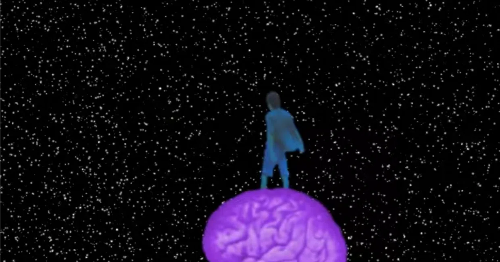

Asteroid I-141
The creative capacity our brains exhibit during unknown states of consciousness is fascinating—almost akin to a superpower. Today, I present this track created in 2013 through experiments conducted in REM sleep states, serving as the closing piece of the album.
Lyrics
I find myself in a strange world
that they call Earth.
Strange people, filthy inside,
glowing only on the surface.
Spending their lives sculpting the body,
leaving the soul hollow and empty.
So far away from my own star,
gazing at the dawn.
Sing, beautiful flower,
sing, beautiful flower,
for I must soon return to my star.
No one believes,
no one understands,
only you know where my true home lies.
They claim there are too many birds
for just a single tree.
Few here draw sheep,
while baobab sprouts lie in wait.
Climbing the mountain, marching straight ahead,
reaching nowhere at all.
People tell me "do something sensible,"
having forgotten how to dream.
Sing, beautiful flower,
sing, beautiful flower,
for I must soon return to my star.
No one believes,
no one understands,
only you know where my true home lies.
He was just another fox among thousands,
yet I made him my friend.
He taught me that what is essential
remains invisible to the eye.
And my rose is unique in all the world;
the time to return has come.
This body is heavy, like old bark
that must be left behind.
Sing, beautiful flower,
sing, beautiful flower,
for I must soon return to my star.
No one believes,
no one understands,
only you know where my true home lies.
Gaze up at the sky and try to hear my voice.
The stars are laughing, for I exist within you.
About the Song
To remain faithful to the work, I rely on the notes recorded in my 2013 journal.
Journal Entry — August 22, 2013:
I don't know which dream in sequence this was, but I had it yesterday. I had to wake up at 6:00 AM, lock myself in the bathroom, and hum about 5 takes because my voice was still asleep. Unable to fall back asleep, I tried picking out a few parts on the guitar.
The dream itself wasn't extraordinary. My sleeping sister kept humming a melody that went "Sing, maiden...", and through the dream, I attempted to capture that line. I remember using a long cardboard tube—like the core of a toilet paper roll—trying to blow into it and emulate the melody. In my head, however, it resonated like a tune played on a flute.
As I pondered in the dream what the next part would sound like, the structure assembled itself in my mind right before waking up.
Currently, I am working out the guitar melody for this track. My brother made me a PC line-in cable, so I plan to record a home demo. Though an accident already happened yesterday: by take 7, I realized the guitar wasn't plugged in, and I had been recording total silence.
This new track references The Little Prince—a book I was re-reading for perhaps the third time. I want it to be a sort of love story addressing the Little Prince's asteroid (which was entirely different), while serving as a metaphor for my own mind and existence, which feel fundamentally misunderstood. Like the book itself, the song treats death as simply part of the journey.

Journal Analysis — September 2, 2013
I find myself in a strange world / that they call Earth...
The Little Prince arrives on Earth just as in the book, serving to reflect my own philosophy. The opening lines draw slight inspiration from John Lennon's "Crippled Inside"—expressing that no matter how meticulously one crafts external beauty, the inside remains neglected. People invest time and money into sculpting their bodies rather than their souls. The world operates under the illusion that all that glitters is gold, though we know that isn't true. At the end of the stanza, the Little Prince gazes at the dawn—something he did when feeling melancholy, lonely, and sad, reflecting the emotions I feel in this world.
Sing, beautiful flower... / Only you know where my true home lies.
Referencing the book once more, it illustrates the bond between the Little Prince and his flower. The second part—"No one believes, no one understands"—formed the core foundation when writing. It speaks of "my star," "my world," and "my mind," which no one believes in or understands. Most people reading the book might say: "What pretty words, he's singing to the flower as he departs," but in truth, it cries out a deep sorrow over being misunderstood in my world. A world that may sound fantasy-like to some, yet feels impossible to bridge.
They claim there are too many birds / for just a single tree...
The first line came to me while walking with my daughter and ex-partner near Brown Square, in front of the church in Adrogué. I don't recall the exact reason, but I blurted out: "There are too many birds for just a single tree," and liked the phrase. I even considered placing it in Asma Mental. It references the claim that "there isn't enough happiness for everyone," even though the world, food, happiness, and love ought to exist in abundance for all.
The following line—"Few here draw sheep..."—means few people do good or plant solid, healthy roots in the world. It is both a reference to The Little Prince and a subtle nod to Scripture (Matthew 13).
The stanza beginning "Climbing the mountain..." quotes the book almost verbatim. The section stating "People tell me 'do something sensible'" is deeply personal. It touches upon my ex-partner, my mother, peers, and everyday acquaintances telling me to get realistic, viewing music as a mere hobby or lazy pastime.
In my life, music brings profound joy, yet imposes an even heavier burden. Earlier this year, my mother offered to pay for programming school to get me a "real job." My ex-partner told me: "Work, stop dreaming, keep your feet on the ground. You're good at guitar, but be realistic." When I asked her whether she believed in my words or that I would become a great star, she laughed. Many told me to study, get a better job, or that music wouldn't support my daughter. This line confronts all of that—which is why I resonate so deeply with the Little Prince.
He was just another fox among thousands... / The time to return has come.
The first stanza quotes the book almost directly, encapsulating my worldview. The second brings the narrative to its conclusion, contemplating possible interpretations of death—leaving it to the reader whether the protagonist reached his desired star, the true home where he could be his authentic self.
Gaze up at the sky and try to hear my voice. / The stars are laughing, for I exist within you.
Connecting back to Scripture—"Whoever finds their life will lose it"—and to the book, I feel closer to the truth each day. I hope to release several albums and share my love and words with the world, knowing that when God's will is fulfilled, it will be time to return home—a decision made beyond human ambition.
If by then I have become a star, many will search for greatness in the words I left behind. Greatness exists there, yet it is no secret. People will look up at the sky and ask: "Is he up there, watching us sing Asma Mental together?" That ambiguity leaves an open ending, where the stars smile like Schrödinger's cat, filling hearts with the fundamental uncertainty of life that most choose to ignore.
It all culminates in the final line: "...for I exist within you." Time is relative; I exist within these ideas today, in the same time as you, and eventually I will scatter into dust, touching the wind, the trees, and passing from one connection to the next. The light from the sun, moon, and stars that touched me will touch your skin, and my voice will echo alongside my words through recordings. If my voice exists, I exist. But if no one listens, if the world does not see, feel, interpret, or illuminate me, then I do not exist on this Earth. So it matters little where you think I am—because, one way or another, I already exist within you.